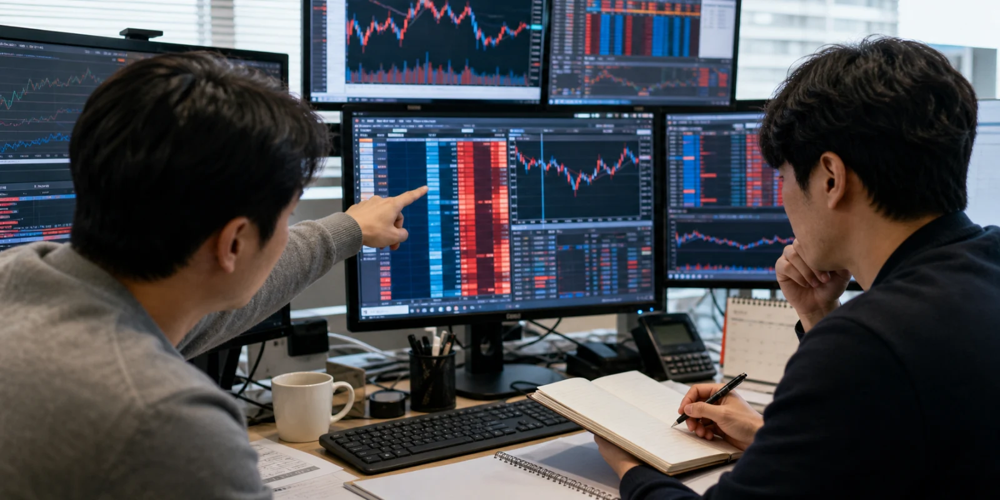

한국주식 시장에서 하루의 관심은 대개 거래대금 순위표에서 먼저 움직입니다. 가격이 크게 오른 종목보다 더 중요한 것은 누가, 어떤 이유로, 얼마나 많은 자금을 그 종목에 태웠는지입니다. 거래대금은 단순한 인기 지표가 아니라 기관, 외국인, 개인, 프로그램 매매가 같은 시간대에 어떤 기대를 공유했는지 보여주는 흔적입니다. 이 글은 특정 종목 하나를 추천하거나 제외하려는 글이 아니라, 어떤 종목이든 거래대금이 몰렸을 때 확인해야 할 기준을 정리합니다.
순위표가 말하지 않는 것

거래대금 상위 종목은 그날 시장의 관심이 모인 곳을 보여주지만, 순위표만으로는 관심의 성격을 알 수 없습니다. 실적 기대, 정책 수혜, 테마 순환, 지수 편입, 공매도 잔고 변화, 대주주 지분 이슈, 신규 수주 공시가 모두 같은 거래대금 숫자로 나타날 수 있습니다. 그래서 첫 화면에서는 상승률보다 거래대금 증가율, 이전 평균 대비 회전율, 장 초반과 장 후반의 체결 위치를 함께 보아야 합니다.
특히 한국주식은 대형주와 중소형주의 거래대금 해석이 다릅니다. 대형주는 지수와 외국인 수급의 영향을 크게 받기 때문에 시장 전체 위험 선호와 환율까지 같이 보아야 합니다. 중소형주는 유통주식 수가 작아 같은 금액도 훨씬 큰 가격 충격을 만들 수 있으므로, 유통가능 물량과 전환사채, 보호예수 해제 같은 공급 변수를 함께 확인해야 합니다.
돈이 들어온 이유
거래대금이 몰린 종목을 읽는 첫 질문은 왜 오늘인가입니다. 전날 장 마감 뒤 공시가 있었는지, 장중 언론 보도나 정부 발표가 있었는지, 같은 업종의 해외 종목이 먼저 움직였는지, 실적 발표 일정이 가까운지 확인해야 합니다. 이유가 분명한 거래대금은 다음 확인 지점이 비교적 명확하지만, 이유가 흐릿한 거래대금은 소문과 단기 수급이 섞였을 가능성이 높습니다.
이때 공시의 종류를 구분하는 일이 중요합니다. 단일판매 공급계약, 투자 결정, 자기주식 취득, 유상증자, 주주배정, 전환사채 발행, 최대주주 변경은 모두 가격에 영향을 줄 수 있지만 의미는 전혀 다릅니다. 좋은 소식처럼 보이는 공시도 자금 조달 부담을 남길 수 있고, 단기 악재처럼 보이는 공시도 불확실성 해소가 될 수 있습니다. 거래대금은 공시의 방향보다 시장이 그 공시를 얼마나 진지하게 가격에 반영했는지 보여줍니다.
유동성의 진짜 얼굴
거래대금이 많다는 말은 언제나 좋은 뜻이 아닙니다. 많은 돈이 들어왔다는 뜻이기도 하지만, 같은 양의 돈이 빠져나갈 통로가 넓어졌다는 뜻이기도 합니다. 장중 고점 부근에서 대량 거래가 반복됐는지, 종가가 거래량을 따라갔는지, 시간외 단일가에서 가격이 유지됐는지 보면 유동성의 질을 어느 정도 확인할 수 있습니다.
유동성의 질을 볼 때는 호가 간격도 중요합니다. 거래대금이 커 보여도 매수와 매도 호가가 얇으면 작은 주문에도 가격이 흔들립니다. 반대로 호가가 두껍고 체결이 여러 가격대에 분산되면 시장 참여자가 넓게 붙어 있다는 뜻일 수 있습니다. 종목 이슈를 다룰 때는 당일 등락률보다 이 유동성이 다음 날에도 남는지를 봐야 합니다.
다음 날 확인할 신호
거래대금 상위 종목은 하루만 보고 끝내면 해석이 얕아집니다. 다음 날 장 초반 갭 상승 뒤 바로 밀리는지, 전일 종가 위에서 거래가 이어지는지, 같은 업종의 후속 종목으로 자금이 확산되는지 살펴야 합니다. 자금이 한 종목에만 머물면 단기 이벤트일 가능성이 커지고, 업종 안에서 순환하면 시장이 더 큰 이야기를 받아들이고 있다는 신호가 될 수 있습니다.
한국주식 데스크가 앞으로 다루어야 할 종목도 이 기준에서 출발해야 합니다. 거래대금 상위권에 새로 진입한 종목, 평소보다 회전율이 급증한 종목, 공시 뒤 거래가 폭발한 종목, 신규상장 후 첫 기관 수급이 붙는 종목을 모두 후보로 놓아야 합니다. 중요한 것은 특정 이름을 고정하는 것이 아니라, 자금이 몰린 이유와 남은 위험을 매번 새로 확인하는 태도입니다.
독자는 거래대금 순위를 투자 지시표가 아니라 질문 목록으로 받아들이는 편이 더 안전합니다. 오늘 왜 이 종목에 돈이 몰렸는지, 그 이유가 공시와 실적으로 확인되는지, 유통가능 물량이 수급을 버틸 수 있는지, 다음 날에도 같은 관심이 이어지는지 확인해야 합니다. 이런 기준이 쌓이면 거래대금 상위 종목은 단순한 화제가 아니라 시장의 방향을 읽는 출발점이 됩니다.
거래대금 상위 종목을 다룰 때는 투자자별 순매수만 따로 떼어 보지 말고 가격이 머문 구간을 같이 보아야 합니다. 외국인이 샀다는 문장만으로는 부족하고, 그 매수가 장중 고점 추격인지 저점 방어인지, 종가까지 유지됐는지, 같은 업종의 다른 종목에도 번졌는지 확인해야 합니다. 자금의 방향은 숫자 하나가 아니라 시간대와 가격대가 함께 말해 줍니다.
또 하나의 기준은 전일 평균과의 거리입니다. 평소 하루 거래대금이 작은 종목이 갑자기 상위권에 들어오면 시장은 새 정보를 찾기 시작합니다. 이때 실제 공시가 있는지, 리포트나 정책 뉴스가 있는지, 커뮤니티성 기대만 있는지 구분해야 합니다. 확인 가능한 원인이 없는데 회전율만 높아졌다면 다음 날 변동성이 더 커질 수 있습니다.
거래대금이 큰 종목을 오래 추적하려면 당일 뉴스보다 반복성을 봐야 합니다. 첫날에는 수급이 붙고 둘째 날에는 실망 매물이 나오며 셋째 날에는 업종 안의 다른 종목으로 관심이 이동할 수 있습니다. 이런 흐름을 적으면 독자는 한 종목의 급등락보다 시장이 어떤 이야기를 시험하고 있는지 이해할 수 있습니다.
이 분야의 글은 앞으로 코스피 대형주, 코스닥 성장주, 신규 테마주, 실적 개선주를 모두 같은 출발선에 놓고 보아야 합니다. 다만 모든 종목을 같은 말로 설명하지 않고 거래대금이 몰린 이유를 공시, 실적, 정책, 공급 물량, 지수 수급 중 어디에 둘 수 있는지 매번 새로 확인해야 합니다.
거래대금 순위는 종목을 고르는 시작점일 뿐이며, 그 자체로 좋은 종목을 뜻하지 않습니다. 같은 상위권이라도 실적 확인으로 들어온 자금, 정책 기대를 따라온 자금, 단기 테마를 좇는 자금은 서로 다른 속도로 빠져나갑니다. 따라서 글을 쓸 때는 종목명 옆에 반드시 원인 후보를 붙이고, 그 원인이 공식 자료로 확인되는지 별도로 표시해야 합니다.
또한 거래대금이 몰린 종목은 신용거래와 미수 거래가 늘어나는지도 함께 보아야 합니다. 상승이 이어질 때는 이런 레버리지가 매수세처럼 보이지만, 가격이 꺾이면 반대매매와 손절 물량으로 바뀔 수 있습니다. 독자에게 필요한 정보는 오늘의 관심뿐 아니라 그 관심이 얼마나 빚을 동반했는지입니다.
장기적으로는 같은 종목이 여러 차례 거래대금 상위에 등장하는지도 중요합니다. 한 번의 급등은 이벤트일 수 있지만, 실적 발표와 공시, 업종 순환이 반복되며 거래대금이 다시 붙는 종목은 시장이 계속 확인하고 있는 의제가 있다는 뜻입니다. 이런 반복 신호를 모아야 한국주식 데스크가 모든 종목을 넓게 다루면서도 중심을 잃지 않습니다.